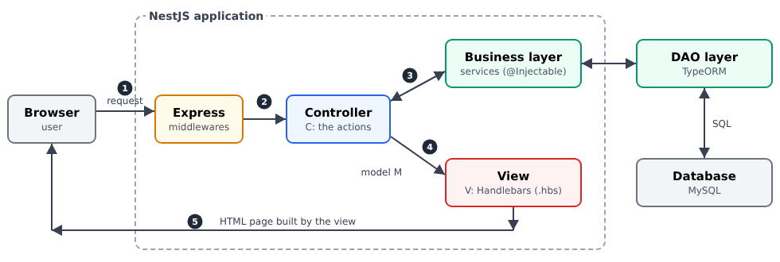
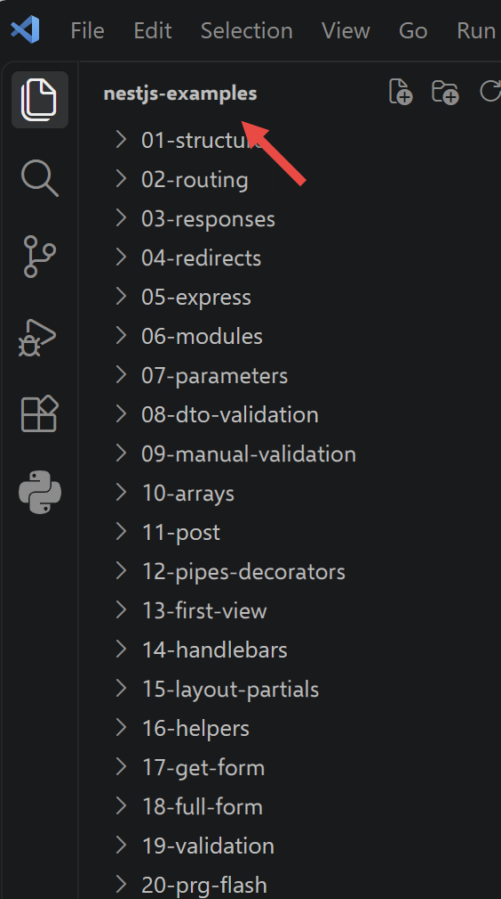
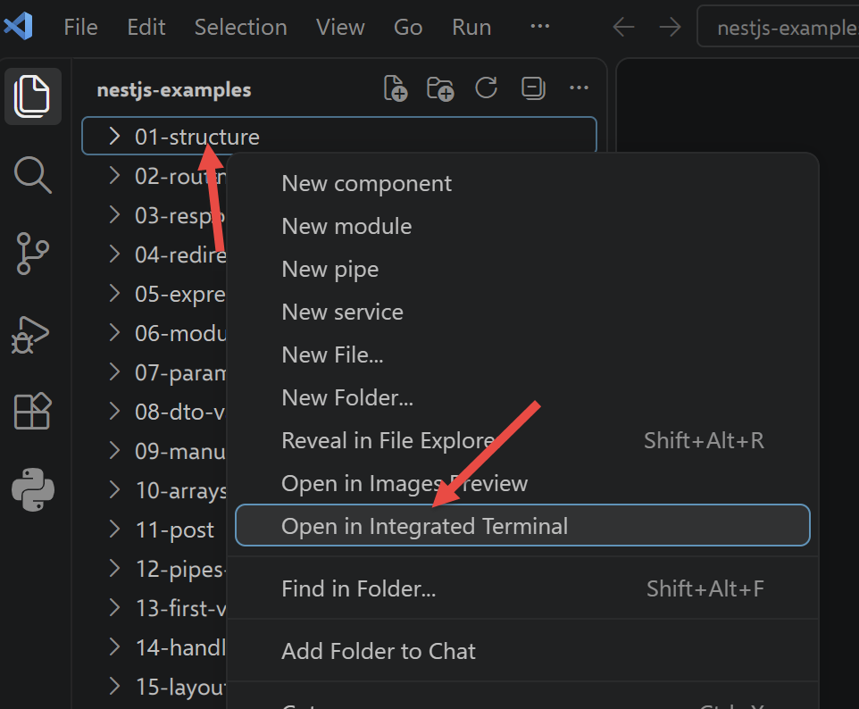

1. Introduction
The document’s PDF is |HERE|.
The document’s codes are |HERE|.
This document is a product of Anthropic’s IA Claude. Its purpose is to adapt the document *Introduction to ASP.NET MVC by Example* (2013) to the [NestJS] web framework:
- the [ASP.NET MVC] framework and the [C#] language are replaced by the [NestJS] framework and the [TypeScript] language;
- the [Razor] views are replaced by [Handlebars] views;
- [Entity Framework] data access is replaced by ORM, [TypeORM], and a [MySQL] database.
The document follows the structure of the original course: first, numerous small projects, each focused on a single concept, followed by a comprehensive case study—a web application for scheduling appointments at a medical practice—with all files fully commented. The chapter from the original course devoted to the basics of web programming (the HTTP protocol, the HTML language) has not been included: these basics are assumed to be known.
1.1. The Role of NestJS in a Web Application
A web application is often built in layers, with each layer communicating only with its neighboring layers:

- the web layer receives HTTP requests from the browser and returns HTML pages to it. [NestJS] helps us write this layer;
- the business layer contains the application’s business rules (e.g., “a patient can have only one upcoming appointment”). It knows nothing about the web: it could just as easily serve a command-line application;
- the data access layer (layer [DAO], for [Data Access Object]) reads from and writes to the database. We will use the ORM [TypeORM] ([Object Relational Mapper]), which maps the rows of the tables to the [TypeScript] objects.
The web layer itself follows the [MVC] ([Model – View – Controller]) model:
- the controller (C) is a class whose methods—called actions—each handle a specific type of request (for example, [GET /schedule]). An action reads the request parameters, invokes the business layer, and then selects the view to display;
- the model (M) is the set of data that the action passes to the view: a simple [JavaScript] object;
- the view (V) is a [Handlebars] file (extension [.hbs]): a HTML file in which [{{...}}] tags are replaced by data from the model.
The processing of a request follows the numbered steps in the diagram:
- 1: The browser sends a HTTP request, for example, [GET /schedule?doctorId=1&day=2026-09-24];
- 2: [NestJS], which relies on the web server [Express], selects the action responsible for handling this request: this is routing. Before reaching that point, the request may pass through middleware, guards, interceptors, and pipes, which we’ll explore in the following chapters;
- 3: The action requests the data it needs from the business layer;
- 4: It builds the view template and specifies the view that should display it;
- 5: The [Handlebars] view engine generates the HTML page, which [NestJS] returns to the browser.
[NestJS] is a [Node.js] framework written in [TypeScript]. It builds on the concepts of the [Spring] ([Java]) and [Angular] frameworks: decorators ([@Controller], [@Get], [@Injectable]...) describe the role of each class, and dependency injection provides each object with the dependencies it needs. It is often used to write servers that return JSON to a client [JavaScript] ([Angular], [React], [Flutter]...). This document uses it to write a classic web application: the server generates the HTML pages, and the browser simply displays them.
1.2. Tools Used
The examples were written and tested using the following tools (their installation is described in the appendix):
- [Node.js] 20 and its package manager [npm];
- the editor [Visual Studio Code];
- a recent browser ([Chrome], [Firefox], [Edge]);
- the command-line tool [curl], which displays raw HTTP responses (it is included with [Windows] 10 and 11);
- the SGBD [MySQL] (or [MariaDB]), for example, the one for [Laragon] under [Windows], starting with the chapter on data access.
The library versions are those in the [package.json] file in the examples folder: [NestJS] 10, [TypeScript] 5, [hbs] 4 ([Handlebars]), [class-validator] 0.14, [TypeORM] 0.3, [Bootstrap] 5.
1.3. Examples
The examples are stored in a folder named [examples], with one subfolder per example:
All examples share the same libraries, which are declared in [examples/package.json]. They are installed once, in a console opened to the [examples] folder. In VSCode, open the examples folder:

then, in a terminal integrated into VSCode, type the command
Each example then has the minimal structure of a [NestJS] project:
- [src]: the code [TypeScript];
- [views]: the views from [Handlebars] (starting in Chapter 4);
- [nest-cli.json]: the command-line tool configuration for [NestJS];
- [tsconfig.json]: the configuration of the [TypeScript] compiler.
To run an example, open a console in the

and type:
[npx] locates the tool [nest] in the [node_modules] folder within the parent folder. [nest start] compiles the code [TypeScript] in the [dist] folder, then executes [dist/main.js]. With the [--watch] option, the code is recompiled and the server restarted whenever a [.ts] file is modified:
All examples listen on port 3000: only one can be running at a time. Stop the server using [Ctrl-C] in the console.
The file [tsconfig.json] is the same for all examples:
Let’s comment on this file:
- line 3: the compiled code uses the modules [CommonJS] from [Node.js] ([require]);
- line 4: the generated code is from the recent [JavaScript] (ES2022), which includes [Node.js] 20;
- lines 6–7: the source code is in [src], and the compiled code is in [dist];
- lines 9–10: required for [NestJS]. Decorators ([@Controller]...) are a feature of [TypeScript] that must be enabled, and [emitDecoratorMetadata] preserves the types of constructor and method parameters in the compiled code: it is thanks to this that [NestJS] knows which object to inject into a constructor;
- Line 12: The compiler reports the use of a value that may be [null] or [undefined];
- line 13: library declaration files are not checked (faster compilation).
The file [nest-cli.json] is also common to all examples:
- line 4: the source code is in [src];
- line 6: the [dist] folder is emptied before each compilation (a file deleted from [src] does not leave behind an outdated compiled copy).
1.4. Document Content
The document proceeds as follows:
Chapter | Contents | Examples |
Controllers, actions, | From the browser to the action: routes, responses, redirects, modules | 01 through 06 |
The Action Template | Request parameters: conversion, validation, forms POST | 07 to 12 |
The view and its template | Handlebars, templates, partial views, helpers, forms, validation, PRG | 13 to 21 |
Internationalization | An Application in French and English | 22 |
Data Scopes | application, query, client | 23 |
The Lifecycle of a Request | middleware, guard, interceptor, pipe, exception filter | 24 |
Authentication and Authorization | JWT in a cookie, roles, CAPTCHA, attempt limits | 25–27 |
Layered Architecture | Web / Business Logic / DAO with TypeORM and MySQL | 28 |
Case Study | The RdvMedecins application, explained file by file | - |
Each example introduces only a few new concepts, and the chapters build on one another: it is best to read them in order. The case study, meanwhile, draws on all the concepts from the previous chapters: whenever relevant, its commentary refers to the example where the concept was introduced.